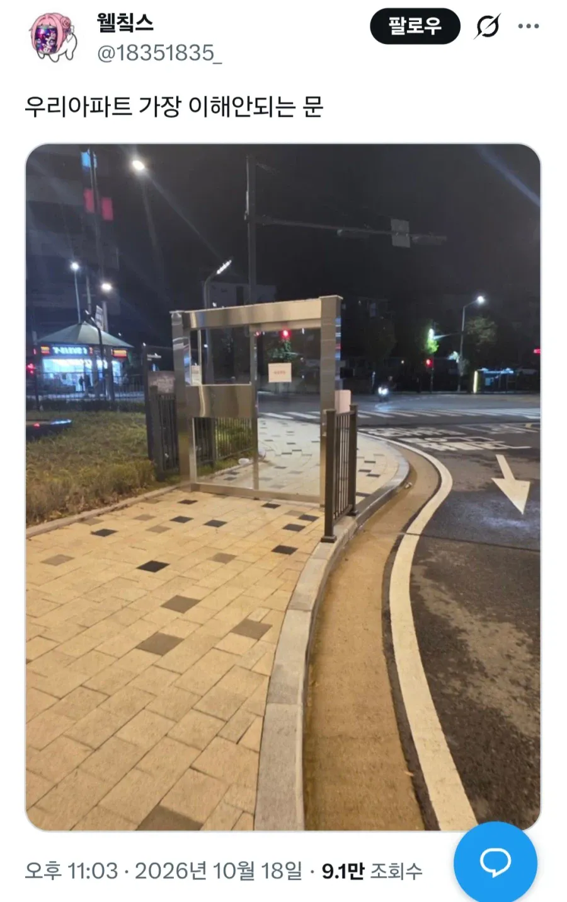

어느 아파트의 이해 안되는 문.jpg
댓글
ㅋㅋㅋㅋㅋㅋㅋㅋㅋㅋㅋㅋ 돈아깝네 ㅋㅋㅋㅋ 누가 해먹었네 백퍼 ㅋㅋㅋ
마인크래프트 징징이들 같은 발상이네
유지 보수도 빡세보이네...
사유지 경계 할려고 한거 아닐까?
옆에경비있겠지
옆에 경비있을테지 빡대가리도 아니고 돈들여서 저렇게 해놓으면 입주민들이 가만있겠나
애들이 좋아할 것 같은 문이네
어디로든 문이네 부럽다
스즈메 ㅋㅋㅋㅋㅋㅋㅋㅋㅋ
라이터로 불붙이면 포탈열림
동래임? 저런데 있던데
문주 만들려다가 포기했나 ㅋㅋㅋㅋ
우리도 저짓할려고 하다가 욕쳐먹고 접던데 ㅅㅂ
무슨 리베이트를 쳐받는건지 좃같은걸 추진하나몰라
입주민 만족도 제일 높은 시설아님? 다른건 더 쓸모 없던데.. 그나마 저게 제일 돈 값하는 시설인것 같음. 생각보다 외부인들이 많이 들어오는가봄.
차도는 자동차 차단기가 막고 있지 않을까 싶네
바닥에 레일선 있는 거 보니까 접이식 도로장벽이 원래 오른쪽에 있었다가 없어지거나 설치 누락한건가?
ㅋㅋㅋㅋㅋㅋㅋㅋ
보통 옆에 펜스도 같이 할텐데 왜 저래놨지
옆에 차단기 있겠지 보통 리베이트땜에 하는거
좌측 녹지측은 이미 경계석 따라 휀스 쳐있는거 같고, 우측은 차단기만 설치되면 막히는 구조 맞는거 같은데
옆에 주차차단기 달고 명목상으로나마 입주민들만 통과시키겠다 뭐 그런건가??
도대체 왜하는거야 ㅋㅋㅋㅋ
우리덩네 새로생긴 아파트도 저래해놨드라 ㅋㅋ
법적으로 안팎 구분되는 거 표시하려고 만든 거 아닐까
최소한 저렇게만 해놔도 적어도 주민 아닌 사람이 덜 들어온다는거임
자동차 차단기도 있고 저 쪽에 경비실도 같이 있기 때문에 문 옆으로 들어오면 경비실에서 대응도 가능함
휠체어타는사람이 아예없나
저기 사는 사람도 귀찮아서 옆으로 들어가겠다 ㅋㅋㅋㅋ
아파트 앱 깔아놓으면 폰 지피에스기반으로 근처가면 문열리긴함ㅋㅋㅋ
요즘은 그렇게까지 돼?
지하 공동출입문도 그렇고 다 그런식으로 열림.
블루투스나 와파처럼 근거리통신 감지되면 열어줌
저번에 친척네 부평집 가니까 저런 문있었음ㅋㅋ
옆에 다뚫려있는데 뭔가 했네
성인입니까?
네
예전에 옥정에도 저런 아파트 있던데
저런거 보통 연구원이나 청사같은 공공기관에서 많이봤는데
ㅅㅂ 돈낭비 관리력 낭비
짓다말아서 저렇게 된거 아닐까? 차단기랑 펜스까지 다 계획하고 지어놨다가 나머지가 어그러져서
바닥보니까 레일로 여닫하는 문이 있는거 아닌가?
게이트 통제는 필요하지
아파트가 아니라 기관일거같은데 근무시간 끝나면 차량 출입구도 펜스로 막아버리고
졸라 악의적으로 사진 찍어놨네ㅋㅋㅋ
저거 원래 주차차단기 내려가 있으면
사람 다닐 공간이 거의 없는 수준임.
사람은 인도로만 다니고 차를 차도로만 다닐 경우
사람이 드나드는 체크와 보안을 위해 만들어 놓은 거임.
아주 정상적인 입주민과 방문객이라면
차단기 내려가 있을때
굳이 사이를 비집고 들어가거나
차단기 아래로 림보를 하면서 들어가지 않을거고
만약 그럴 경우 바로 옆 경비실에서 제지를 함.
오 너희동네임?
정상적인 사람이면 그렇겠지만 어떻게든 들어가고 싶은 비정상적인 사람이면 무슨 소용일까.
도보로 오토바이 지나가지 말라고 해둔것 같기도
다른 차원으로 이동하는 문입니다
도라에몽이 꺼내놓고 회수안했네
여성안심귀가길같은거지